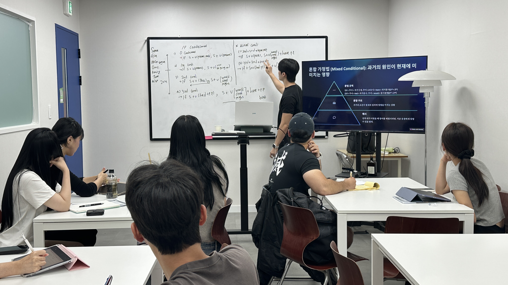
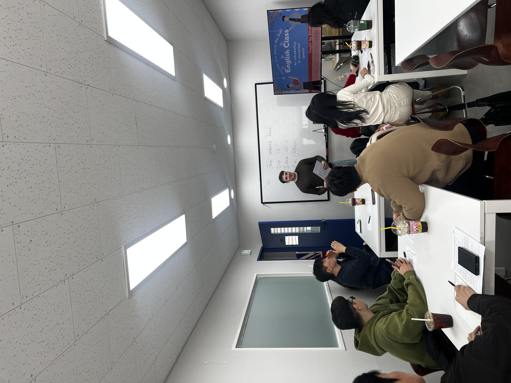
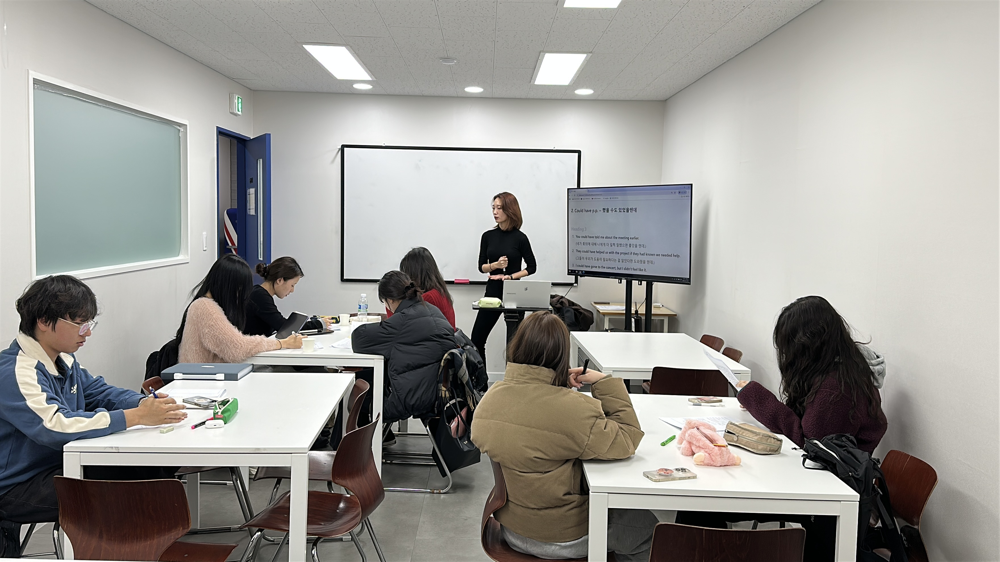
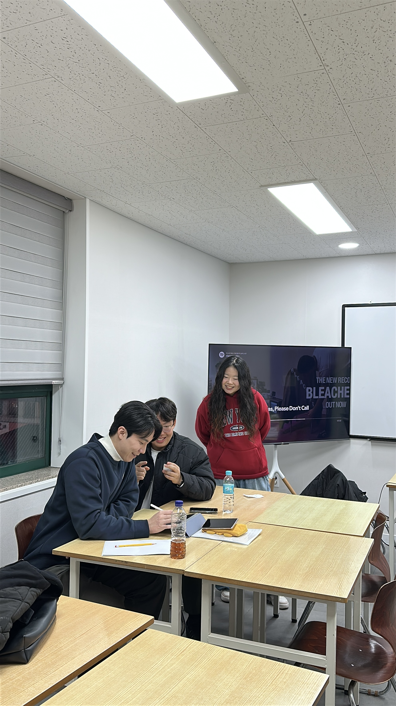
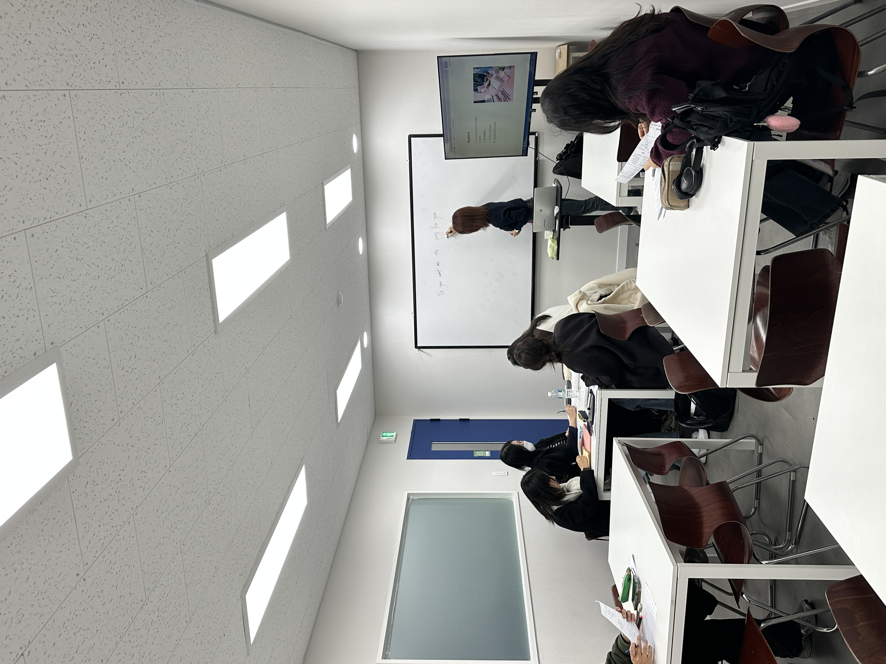

더박스 아카데미에서 기초부터 프리토킹까지,
단계별로 완성하세요.
머릿속엔 영어가 있는데, 입까지 도달하지 못하는
느낌.
생각과 입 사이의 연결 회로를 만들면, 말이 자동으로
따라옵니다.

머릿속엔 분명히 있는데… 입까지 도달하지 못하는 이유
HOW IT WORKS
이건 능력 부족이 아닙니다.
제대로 된 회화 훈련을 받지 못했기 때문입니다.
한국어를 영어로 '번역'하는 게 아니라, 영어 구조로 바로 생각하고 입으로 꺼내는 훈련을 합니다.
시제, 전치사, 관사 등 반복 실수 패턴을 찾아내 뿌리부터 교정합니다.
수업 후 숙제 → 피드백 → 복습. 구조화된 루프로 자동 반복 학습이 됩니다.
4~10명 소그룹으로 개인별 약점을 정확히 파악하고, 나에게 꼭 필요한 부분만 집중 교정합니다.
단순 암기가 아닌 구조 이해 → 직접 문장 생성으로 응용력을 키웁니다.
영어 문장을 처음 배우는 분도 부담 없이 시작할 수 있는 체계적 커리큐럼입니다.




말이 안 나오는 이유부터 정리하고, 바로 써먹는 기본 문장 패턴을 먼저 잡습니다.
설명으로 끝내지 않고, 예문을 내 상황에 맞게 바꿔 말하면서 ‘말하기 루틴’을 만듭니다.
콩글리시/어색한 표현은 수업 중 자연스럽게 다듬고, 같은 의미의 더 자연스러운 대체 표현까지 같이 익힙니다.
짧고 반복 가능한 숙제로 복습하고, 개인 피드백으로 실수가 굳어지지 않게 잡아드립니다.
레벨에 따라 배우는 내용이 다릅니다. 내 레벨에 맞는 커리큘럼으로 시작하세요.
영어 문장을 처음부터 다시 배우고 싶은 분
🎯 목표: "어제 뭐 했어?" 정도의 문장을 스스로 만들어 낼 수 있다
기본 문장은 되지만 디테일이 부족한 분
🎯 목표: 전치사와 관사를 실수 없이 쓸 수 있다
문법은 아는데 말할 때 버벅이는 분
🎯 목표: 뉘앙스를 구분해서 자연스럽게 말할 수 있다
정확도와 표현력을 동시에 높이고 싶은 분
🎯 목표: 스터디에서 자신있게 발언할 수 있다
단순 문법 암기가 아닌, 뉘앙스가 다른 표현들의 차이를 예문으로 이해합니다.
💡 Funny는 '웃긴(Comedy)' 것이고, Fun은 '즐거운(Pleasure)' 것입니다.
💡 Promise는 결혼 서약처럼 무거운 단어입니다. 친구와의 가벼운 약속은 Plans입니다.
💡 should have p.p.는 '했어야 했는데(안 했다)'라는 후회의 감정을 담습니다.
💡 동사의 시제를 '과거'로 쓰면, 현실과의 거리가 멀어집니다. (가정법의 핵심)
💡 Work는 '노동'뿐만 아니라 '기능하다 / 효과가 있다 / 작동하다'로 확장됩니다.
💡 See (눈에 들어와서 봄) / Look at (의식적으로 쳐다봄) / Watch (움직이는 것을 지켜봄)
한국식 문법 용어에 지치셨나요?
원어민이 실제로 쓰는 '맛(Nuance)'과 '감각(Sense)'으로 다시 익힙니다.
🇰🇷 "나 제주도 가봤어" (경험)
❌ "I went to Jeju." (특정 시점 이야기)
✅ "I've been to Jeju." (경험 표현)
🇰🇷 "아직 점심 안 먹었어" (현재까지 영향)
❌ "I didn't eat lunch." (과거 사실만)
✅ "I haven't eaten lunch yet."
(지금도 배고파)
🇰🇷 "3년째 영어 배우고 있어" (현재까지 지속)
❌ "I learned English for 3 years."
✅ "I've been learning
English for 3 years."
💡 경험·아직 안 한 일·지금까지 이어지는 상태는 현재완료, 끝난 과거 사건은 과거형. 한국어엔 이 구분이 없어서 90%가 틀려요!
🇰🇷 "오늘 너무 지루해"
❌ "I'm boring today."
✅ "I'm bored today."
🇰🇷 "나 영어 공부하기로 했어"
❌ "I decided studying English."
✅ "I decided to study English."
💡 enjoy/finish/mind 뒤엔 ~ing, decide/want/plan 뒤엔 to가 와요. 이걸 바꿔 쓰면 원어민이 어색하게 느껴요!
❌ "I went to cafe yesterday."
✅ "I went to a cafe yesterday."
❌ "Can you open window?"
✅ "Can you open the window?"
will (즉흥적) vs be going to (계획/근거)
🍕 "아 배고파, 피자 시켜야지" (지금 결정)
→ "I'll order a pizza."
📅 "나 오늘 친구 만나기로 했어" (이미 계획)
→ "I'm going to meet my friend."
🌧️ "비 올 것 같아" (먹구름 보임)
→ "It's going to rain."
can (일반 능력) vs be able to (특정 상황)
🏊 "나 수영할 수 있어" (일반적)
→ "I can swim."
🏆 "결국 합격할 수 있었어" (과거 성취)
→ "I was able to pass the exam."
강도: Must 💪💪💪 > Have to 💪💪 > Should 💪
🚫 "담배 피우면 안 돼" (금지/규칙)
→ Must not
📚 "시험이라 공부해야 해" (상황적 의무)
→ Have to
🍦 "너 이거 먹어봐" (추천/권유)
→ Should
원어민이 매일 쓰는 동사+전치사 조합
💡 구동사를 알면 영어가 훨씬 자연스러워집니다!
숫자가 올라갈수록 '비현실적'이 됩니다.
각 반을 수료할 때마다, 눈에 보이는 변화가 찾아옵니다.
같은 한국어를 영어로 어떻게 다르게 말하게 되는지 직접 느껴보세요.
단어 나열 수준 → 완전한 문장으로 말할 수 있게 됩니다!
콩글리쉬 표현 → 원어민처럼 자연스러운 표현으로!
문법은 아는데 말할 때 버벅이던 분 → 뉘앙스를 구분해서 자연스럽게 표현
영어가 되긴 하는데 교포처럼은 안 되던 분 → 원어민이 실제 쓰는 표현이 입에서 나옴
주 2회, 1회 90분 수업으로 진행됩니다.
※ 레벨/요일에 따라 반 구성이 달라질 수 있으며, 정확한 시간표는 상담/레벨테스트 결과에 맞춰 안내드립니다.
교재비 등 추가 비용 없이, 수업료만으로 진행됩니다.
* 연장/리뷰/후기/우수상/지인등록 등 추가 할인 제도가 있습니다. (자세한 내용은 추후 안내)
아카데미에서 문법 정확도가 올라오면, 원어민 스터디에서
배운 것을 실전으로 써먹는 단계로 넘어갈 수 있습니다.
중급 이상이라면 아카데미 + 스터디 동시 진행도 가능합니다.
상담을 통해 나에게 맞는 시점을 안내받으세요.